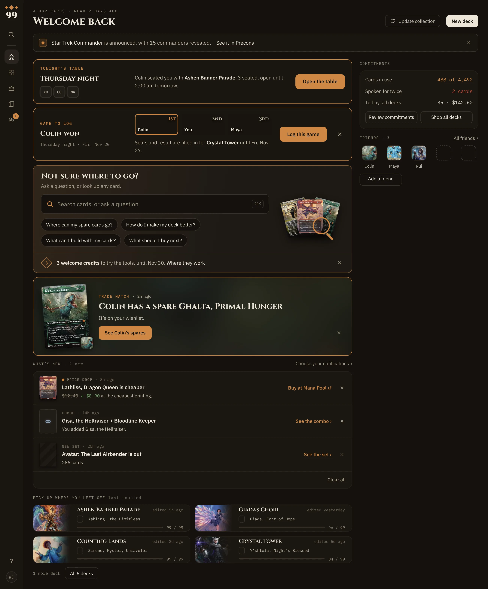
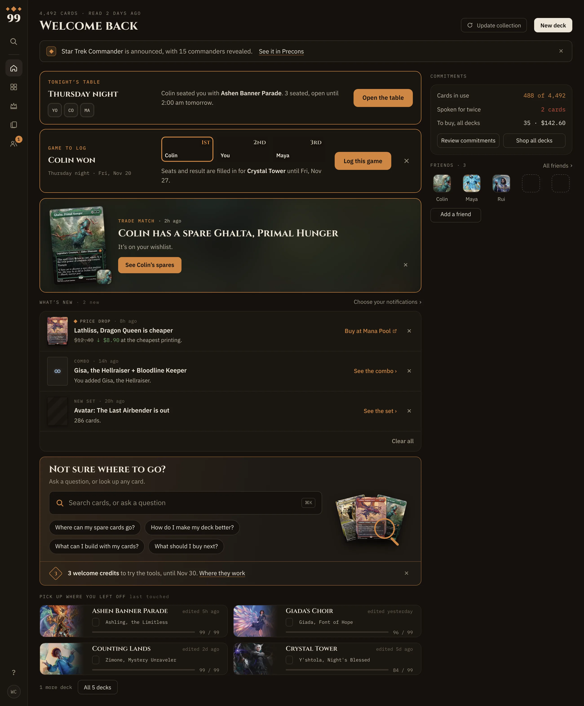
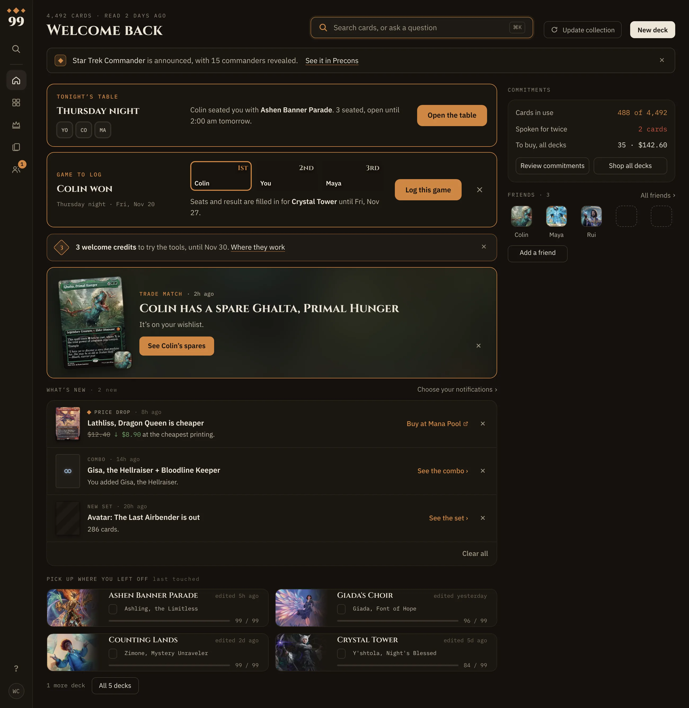
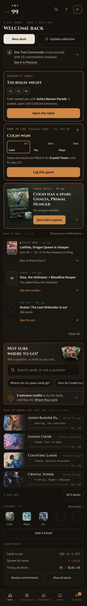
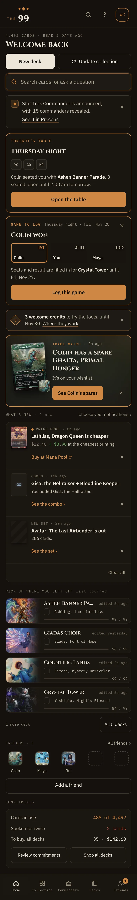
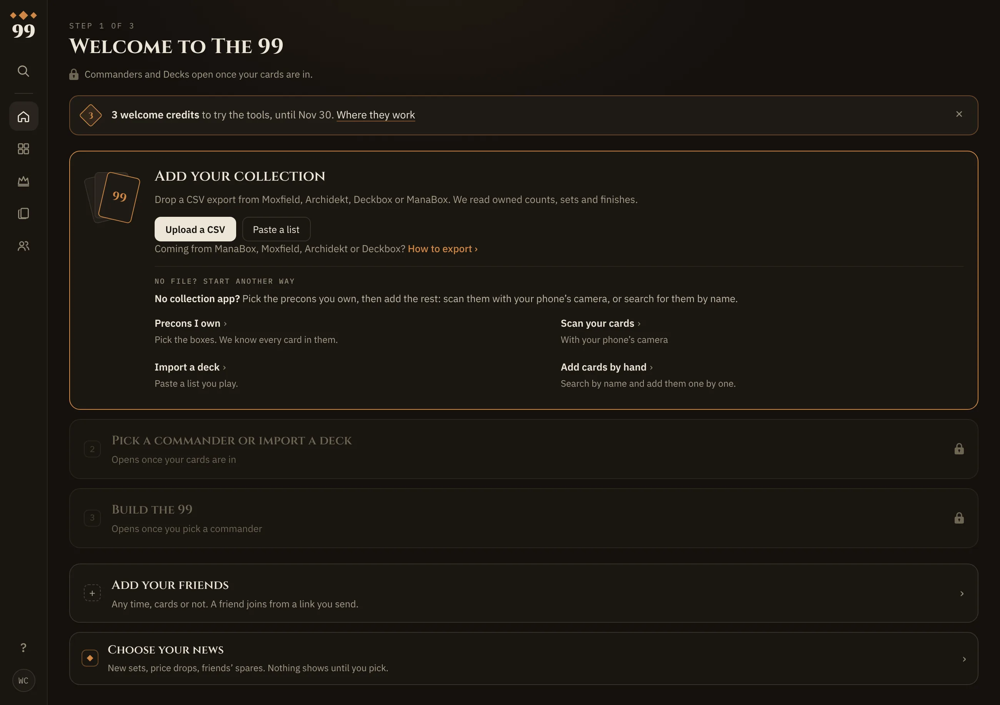
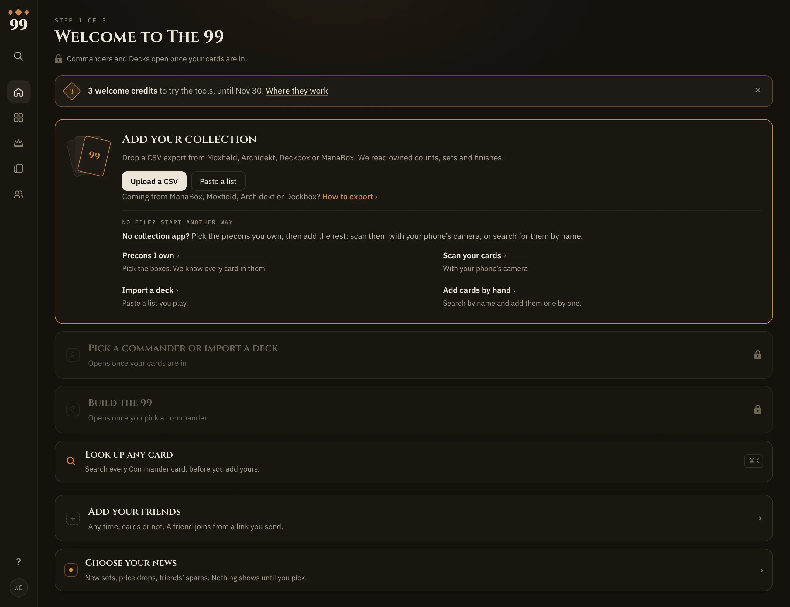
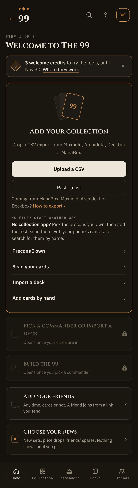
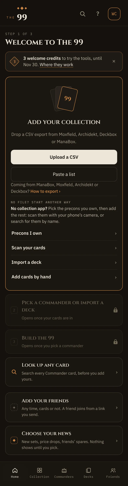

Home order, and search on first run (R7)
The busy Home from H6 three ways, each rendered with the same reader (a table, a game to log, the arrivals banner, the lead, What's new with two unseen, welcome credits), and the first-run Home with and without search.
9 · Reordering a busy Home (R7)
- What is buried today (H6): What's new sits under the decks, so the unseen rows are the page's last block; the welcome credits are a thin strip between two loud blocks (the panel and the lead), easy to scroll past.
- A · One welcome block, news together (recommended): the welcome credits become the search panel's foot (the shipped strip, its edge dropped, its ✕ closes only that line). The credits exist to try the tools and the panel is where the tools are found, so they say one thing. What's new moves up under the lead story, so every notification is in one run; the decks follow. Rule 0's cards still lead.
- B · News first: Rule 0's cards, the lead and What's new, then the panel (with the credits), then the decks. Notifications are never buried; the panel drops to about 1,700px on a phone on a busy day.
- C · Search in the head: no panel. A 40px field in the page head beside Update collection (desktop) or under the buttons (phone), accent-edged; its starters show when it opens (A0). The credits strip stays, What's new moves under the lead. The shortest page, but it is close to R4's field, which read as easy to miss.
- Every option keeps the shipped rules: the arrivals banner spans the page, Rule 0's cards lead the main column, Commitments and Friends keep the right rail.
Q11 · How should a busy Home be ordered?
Recommended: A. It fixes both buried things with one move each, keeps the panel Hugh asked for, and turns two new-player blocks into one.

A · One welcome block, news together
Credits in the panel's foot; What's new under the lead; decks after.

B · News first
The lead and What's new, then the panel, then decks.

C · Search in the head
A field beside the page head's buttons; no panel.

A · Phone
The panel at the fold, its credits foot under it; then the lead, What's new, decks.

B · Phone
Notifications first; the panel under What's new.

C · Phone
The field under the buttons; the credits strip as shipped.
10 · Search on the first-run Home (R7)
- A · Wait (recommended): first run as shipped. It has one job, Add your collection, and step 1 already offers Add cards by hand (search by name). Every starter question is about the reader's cards or decks, so none could answer yet. The magnifier and ⌘K are there from the first visit. The panel, with the credits in its foot, arrives on the first Home after the collection is read.
- B · A row: an unnumbered Look up any card row among the checklist's own rows (after step 3, before Add your friends), the same shape as Choose your news: any card in the catalog, no starters. A press opens the card search.
Q12 · Does the first-run Home get search?
Recommended: A. First run has one job, the questions all need a collection, and step 1 already searches by name.

A · Wait (as shipped)
No panel; the magnifier and ⌘K, and step 1's Add cards by hand.

B · A row
Look up any card, unnumbered, after step 3.

A · Wait
First run as shipped.

B · A row
The row before Add your friends.